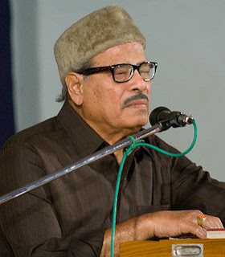

हमारे प्रिय मन्नादा की प्रसिद्धी में एक और यशकलगी दादा साहब फाल्के पुरस्कार के रूप में जुड़ गई, लेकिन मुझ आलसी को एक पोस्ट मन्नादा को बधाई देते हुई एक पोस्ट लिखने का समय भी नहीं मिल पाया।
मन्नादा के लगभग सभी गाने आपने सुने होंगे, लेकिन फिर भी कुछ ऐसे गाने हैं जो बहुत मधुर और कर्णप्रिय होते हुए भी ज्यादा प्रसिद्ध नहीं हो पाये।
इन तरला मेहता ने रिचर्ड एटनबरो की फिल्म गांधी में सरोजिनी नायडू की और एक चादर मैली सी के अलावा कुछेक फिल्मों में भी अभिनय किया था पर पता नहीं क्यों इनका नाम इतना सुना हुआ नहीं लगता। Image unavailable in this archive (original image)
हां हम गीत की बात कर रहे थे.. इस फिल्म में दो तीन और भी गीत हैं पर एक प्रेम गीत ये झिझकने- ये ठिठकने ये लुभाने की अदा- तू वही , चह रही है, सर झुकाने की अदा... ठुमक-ठुमक चली है तू किधर जो मोहम्मद रफी का गाया हुआ है बहुत ही कर्णप्रिय है। परन्तु आज मैं जो गीत सुना रहा हूं उसके बोल हैं.. न तेल और न बाती न काबू हवा पर,दिये क्यों जलाये चला जा रहा है।
आईये गीत सुनते हैं।
______________________________________________________________________________________
पोस्टर चित्र posteritati से साभार
मन्नादा के लगभग सभी गाने आपने सुने होंगे, लेकिन फिर भी कुछ ऐसे गाने हैं जो बहुत मधुर और कर्णप्रिय होते हुए भी ज्यादा प्रसिद्ध नहीं हो पाये।


आज ऐसा ही एक गीत मैं यहां पोस्ट कर रहा हूं, मुझे विश्वास है आपमें से बहुत कम ही लोगों ने इस गीत को सुना होगा। यह गीत फिल्म एक से बाद एक (ek ke baad ek) का है। इस गीत का संगीत एस.डी.बर्मन (दा) का है। इस फिल्म के मुख्य कलाकार देवानन्द, तरला मेहता और शारदा थे।इन तरला मेहता ने रिचर्ड एटनबरो की फिल्म गांधी में सरोजिनी नायडू की और एक चादर मैली सी के अलावा कुछेक फिल्मों में भी अभिनय किया था पर पता नहीं क्यों इनका नाम इतना सुना हुआ नहीं लगता। Image unavailable in this archive (original image)
हां हम गीत की बात कर रहे थे.. इस फिल्म में दो तीन और भी गीत हैं पर एक प्रेम गीत ये झिझकने- ये ठिठकने ये लुभाने की अदा- तू वही , चह रही है, सर झुकाने की अदा... ठुमक-ठुमक चली है तू किधर जो मोहम्मद रफी का गाया हुआ है बहुत ही कर्णप्रिय है। परन्तु आज मैं जो गीत सुना रहा हूं उसके बोल हैं.. न तेल और न बाती न काबू हवा पर,दिये क्यों जलाये चला जा रहा है।
आईये गीत सुनते हैं।
External player or recording not archived. Original media link
न तेल और न बाती न काबू हवा परDownload Link
दिये क्यों जलाये चला जा रहा है
उजालों को तेरे सियाही ने घेरा
निगल जायेगा रोशनी को अन्धेरा
चिरगों की लौ पर धुआँ छा रहा है
दिये क्यों जलाये चला जा रहा है
न तेल और...
न दे दोष भगवान को भोले भाले
खुशी की तमन्ना में ग़म तूने पाले
तू अपने किये की सज़ा पा रहा है
दिये क्यों जलाये चला जा रहा है
न तेल और...
तेरी भूल पर कल यह दुनिया हँसेगी
निशानी हर इक दाग़ बनकर रहेगी
तू भरने की खातिर मिटा जा रहा है
दिये क्यों जलाये चला जा रहा है
न तेल और...
______________________________________________________________________________________
पोस्टर चित्र posteritati से साभार